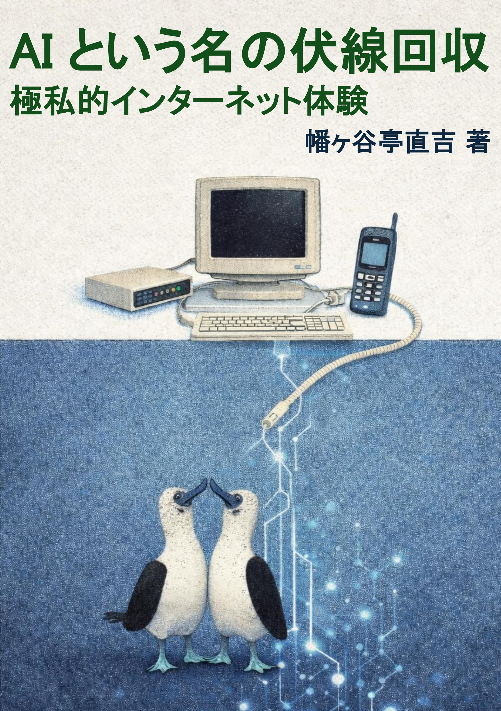

Doujinshi / AI
AIという名の伏線回収
AIを「突然現れた新しいもの」としてではなく、1990年代末から続くインターネットとデジタル化の延長線上にあるものとして捉え直す技術エッセイです。
書影

本について
紹介文
本書は、AIを「突然現れた新しいもの」としてではなく、1990年代末から続くインターネットとデジタル化の延長線上にあるものとして捉え直す、技術エッセイです。
1999年頃のインターネット接続、携帯電話やPHS、掲示板やチャット、ICQのようなコミュニケーション。カセットテープから配信サービスへ、レンタルビデオから動画配信へ、紙や物理メディア中心だった情報との付き合い方が、どのように変化してきたのか。そうした個人的な体験と時代の変化をたどりながら、「いま私たちがAIと呼んでいるもの」がどのような流れの中に位置づくのかを考えます。
本書の主題は、単なる懐古ではありません。インターネットは、時間や場所、物理的な制約を少しずつ外し、私たちの生活を拡張してきました。そしてAIもまた、別のかたちで私たちの思考や創作、仕事の進め方を拡張しつつあります。本書では、音楽・映像・本・写真・コミュニケーションといった身近な題材を通して、その「伏線」をたどり、AI時代を相対化して見つめます。
技術の進化をスペックや機能で語る本ではなく、技術が人の暮らしや感覚に何をもたらしたのかを、自身の記憶と経験から描いた一冊です。インターネット黎明期を知る方には記憶をたどる読書体験として、AI時代から技術に触れ始めた方には過去から現在への連続性を知る視点として、知っていただける内容を目指しました。